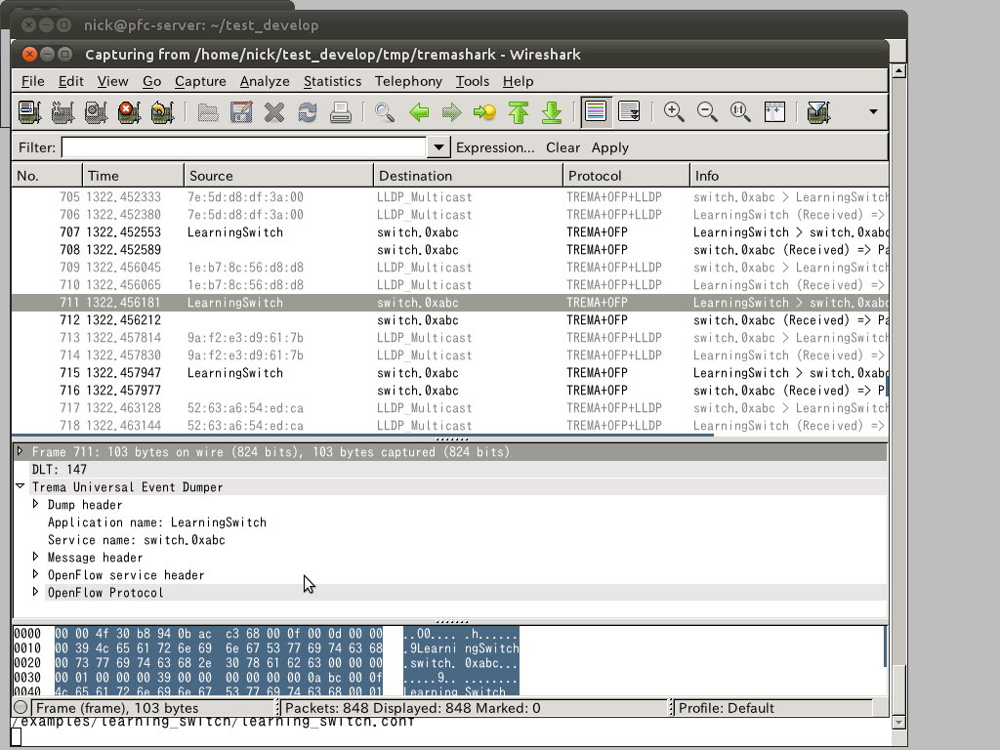

I am not going to explain every directory but I want you to pay particular attention to ruby, spec and src directories and their subdirectories.
If you download trema and perform a directory listing you will find the following:
I
am not going to explain every directory but I want you to pay
particular attention to ruby, spec and src directories and their
subdirectories.
In the ruby/trema directory you will find a number of C source files and some ruby files.
The common rule is that each C source file is an implementation file for an Openflow message with the accompanying header interface file. It is a ruby C extension file. It contains calls to ruby prefixed with rb_*. Most of the defined classes are defined under the trema module. The function block that start with Init_<class_name> defines the constructor and public, protected or private methods of the class. You will also find that all initialization calls are called from trema.c
Another file worth mentioning is the controller.c It defines the Controller class and all its supported methods. You don't instantiate the Controller class but you inherit from it to receive all its functionality. Controller kicks into life implicitly by the trema run command that starts your application within the trema framework. After the initialization process your child class can be coded to receive any openflow event.
The trema command needs some further explanation. It is a command written in Ruby that resides at Trema's top directory. If you invoke trema without passing any options it enters the ruby interpreter irb for you. At the moment exit the irb prompt. To print out what sub-commands the trema supports run help on it.
./trema help
You will see a list of options and one of them is the run option that we mentioned above. Further invoking trema with ./trema run –help will display the available options for the run sub-command.
We can use the trema run command to either run a ruby or a C program. You use the -c option to supply any configuration that the program needs to run and execute.
The following two examples indicate how to run the ruby and C version of the learning switch program.
./trema run ./src/examples/learning_switch/learning_switch.rb -c ./src/examples/learning_switch/learning_switch.conf
./trema run ./objects/examples/learning_switch -c ./src/examples/learning_switch/learning_switch.conf
You probably notice that the command syntax is identical for both ruby and C program. The trema command behind the scenes would ensure that the configuration file is read and parsed correctly. Regardless of the executable program type C or Ruby the trema command with start up and initialize for you all trema services. The only prerequisite here is that the ruby program must declare a class inherited from the Controller class that is evaluated with the context of its definition.
Now I want to turn your attention to directory src/lib. This is the directory where most of the trema services are found. Two important set of files openflow_message.[ch] and openflow_application_interface.[ch]. The openflow_message.c file contains a number of function calls starting with create_xxx that as the name suggests create openflow messages. For example create_hello(...), create_echo_request(...) and so on. The openflow_message.h defines the function prototypes for those calls, consult them to find out what parameters you need to pass when you call them.
The openflow_application_interface.c file defines all the openflow event handlers and callbacks. The file contains a number of set_xxx_handler functions that a controller class would call to register a callback that is called when an event is triggered. The common practice here is to name the callback handle_xxx. The openflow_application_interface.h defines the function prototypes for the handlers and the parameters passed when callbacks invoked.
Going up the directory tree there is a packetin_filter directory that contains a single file packetin_filter.c. It interprets and executes a simple rule filter an incoming packet type and output the result to a destination service as a packet_in event. It can filter packets conforming to lldp type or any other IPv4 type packet.
Under the same src tree there is a switch_manager directory that contains code process that listens for any Openflow connections on a server port and theb forks a switch daemon process to handle the connection thereafter.
Another important directory from debugging point of view is tremashark. It is a wireshark plugin that collects trema's inter-process messages and other openflow events for display. How to configure and install tremashark refer to the README file under its directory. We are going through an example to use to display openflow events using tremashark. To run insert the following line of text at the beginning of a configuration file.
Bear in mind that tremashark
use_tremashark
To indicate to tremashark what processes you need to debug use the following command from the top trema directory.
Sudo kill -USR2 `cat tmp/pid/<process-name>.pid`
Now when you run the program using trema run wireshark should be invoked automatically. You don't need to set anything in wireshark apart from executing one or more of the above commands to collect messages to debug.
The following screenshot shows a captured output from wireshark.

From the above screenshot you can observe that the highlighted message from screen is originated from application LearningSwitch destined for switch.0xabc which is a switch daemon process.
To send an openflow message an application use a wrapper functions called send_message(). It takes two arguments the datapath_id (the vSwitch identifier) and the enclosed message encapsulated as a opaque buffer object.
When a message is dumped to tremashark the header and body include the following fields.
Type of message
date and time in nanoseconds precision
application name length
service name length
application name
service name
-I/usr/lib/i386-linux-gnu/glib-2.0/include
copy the packet-openflow.so wireshark plugin into ~/.wireshark